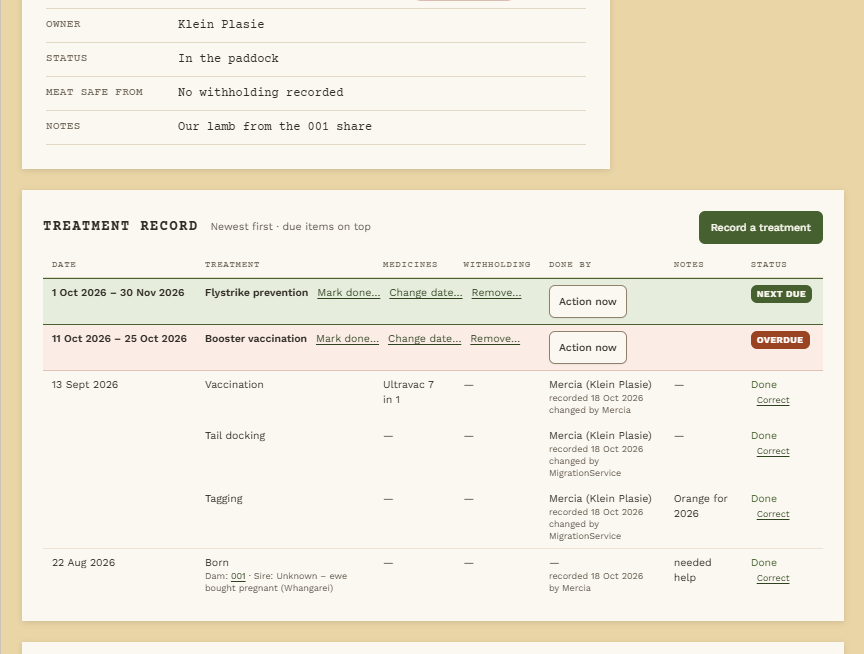
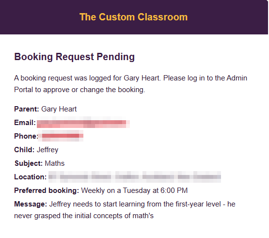
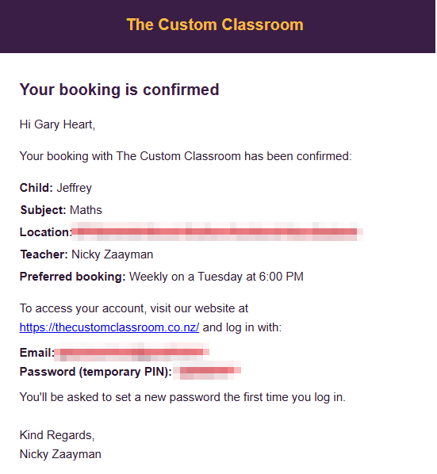

Featured project · 2026 – present
Paddock Pal
Livestock management for our own sheep flock – plus a mobile app for the paddock
The problem
We managed our flock on spreadsheets, and they broke down exactly when it mattered: at lambing, at treatment time, and when choosing which ram goes with which ewes. I wanted one place that turns scattered records into clear, timely decisions.
My role
Product owner and lead developer – requirements, architecture, business rules and delivery, from concept to a working system.
Stack
- .NET 10 Minimal APIs
- EF Core
- SQL Server
- React
- TypeScript
- .NET Aspire
- Microsoft Agent Framework
- Claude
- GitHub Actions
- Tailscale
Decisions worth showing
- Farm rules are calculated, not guessed. Withholding periods, due dates and inbreeding coefficients come from plain, unit-tested C# – never from an AI model.
- AI proposes, a person decides. Agents research and suggest breeding and treatment plans; every proposal waits for approval, and agents show in the audit trail as separate actors.
- Built for trust. Soft deletes, temporal history and a full audit trail, backed by domain rule tests, API integration tests against a real SQL Server and agent evaluations in CI.
- Now building: the paddock app. Offline-first for patchy rural coverage, with changes queued on the device and synced when signal returns. The goal is voice-driven recording without putting down the drench gun.




Live in production · 2026 – present
Tutoring booking platform
Booking and client management for a live tutoring business – built and run as sole developer
The problem
Bookings, approvals and follow-ups were manual. The business needed clients to request sessions easily, while the teacher stayed in control of what actually went into the schedule.
What I built
A client-facing site, an admin portal and a teacher portal, with serverless backend functions, scheduled automations and a PostgreSQL database secured with Row Level Security.
Stack
- TypeScript
- Supabase
- Serverless functions
- PostgreSQL
- Row Level Security
- GitHub Actions
- Claude Code
How a booking flows
- 1Client requests a session
- 2Teacher gets an email automatically
- 3Teacher approves – or gets in touch first
- 4Booking confirmed and scheduled
The workflow is automated, but approval stays with a person – nothing lands in the schedule without the teacher's say-so.




Professional work
Highlights from client work
Client code stays private, so these are described rather than shown.
- AI-powered reporting automation – Claude APIs and a Python MCP service that collect operational data and produce and send monthly client reports automatically.
- Cloud transformation – discovery and migration planning for an on-premises estate of 47 virtual machines, and a cloud-native Azure Files replacement for an ageing file server.
- Legacy platform retirement – automated migration of 84 Confluence spaces and around 2,270 pages with zero failures.
- 20 years of production systems – large-scale telecommunications middleware at Altron, run under demanding service-level agreements, plus mentoring and onboarding programmes for engineers.